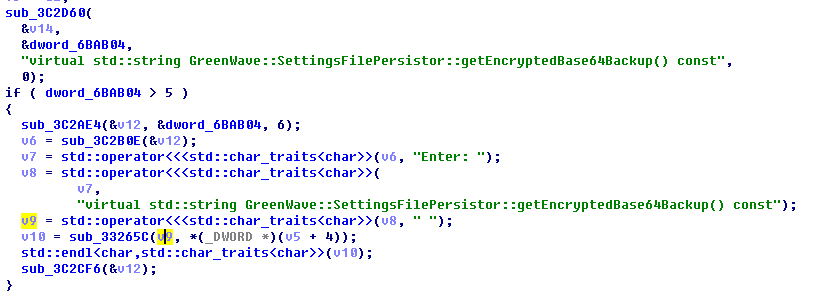
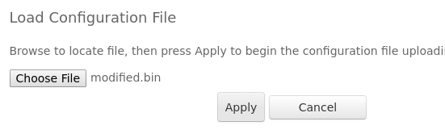
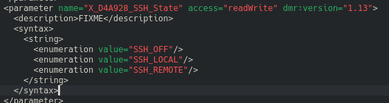
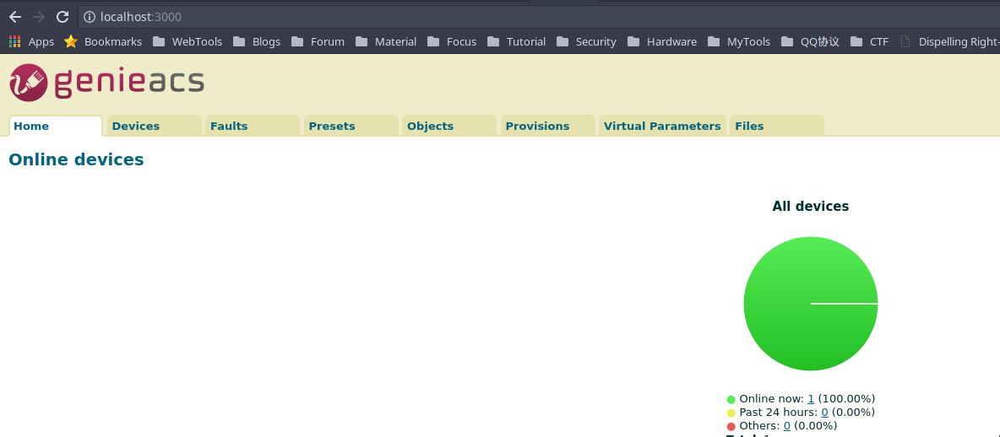
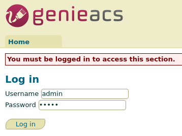
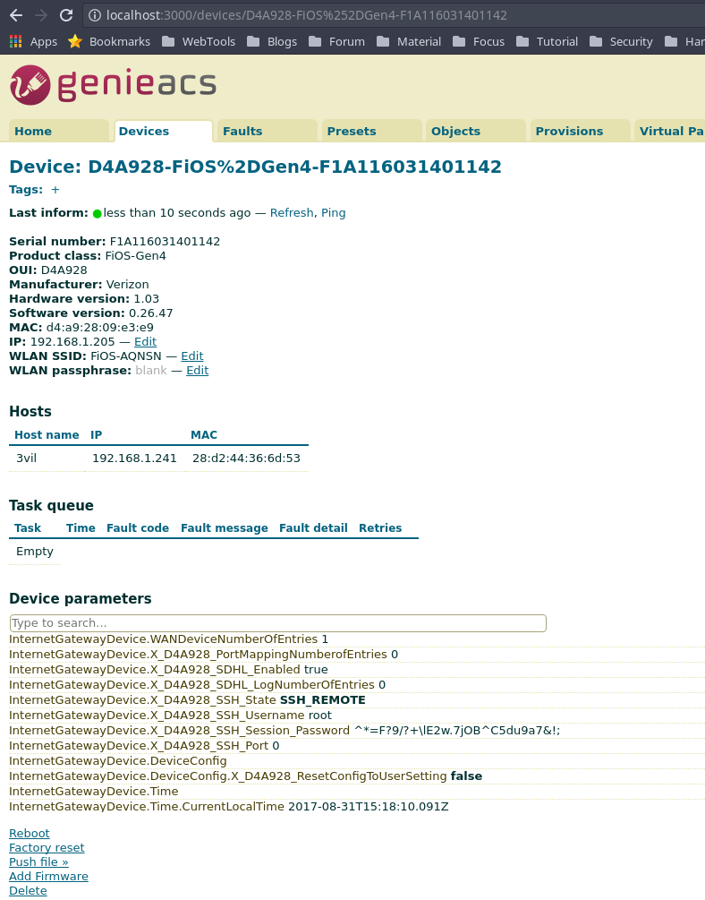
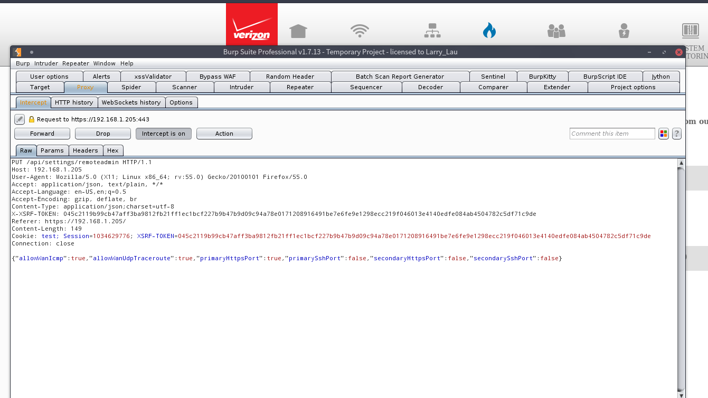
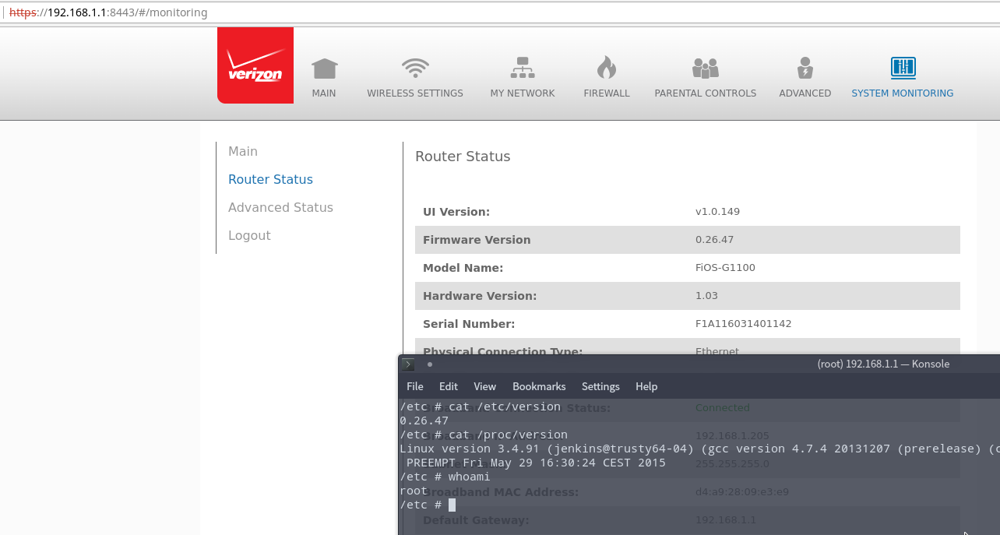

Verizon FIOS-G1100 获取ROOT权限
前言
这篇文章是去年9月写的，7月份时leader弄了个路由器过来，交给一个实习生搞，他搞不定，然后不搞了。后来我有空就搞了一下，但是解密那部分还没弄完，也是弄到一半就让我去做别的事情了，属于烂尾文。
FIOS-G1100固件总共三种类型，目录下文件大同小异 Frontier Verizon 0.x.x 1.x.x.x.x 01.x.x.x G1100运行了CPE服务作为后门，开放端口4567。Verizon通过TR-069协议对终端进行控制。我们本地搭建ACS，通过修改配置文件，把ACS URL指向本地搭建的ACS，可以在WAN口开启具有ROOT权限的SSH服务。
搭建本地ACS
Genieacs
GenieACS是一款开源的具有设备配置功能的TR-069远程管理软件。 要求系统支持Node.js,MongoDB,Redis。DockerHub有打包好的镜像，可以快速搭建。 全局安装genieacs
1
sudo npm install -g genieacs
进入npm模块目录，运行相应服务
1
cd /usr/lib/node_modules/genieacs
运行ACS服务，端口默认7547
1
genieacs-cwmp
GUI的REST API服务，端口默认7557
1
genieacs-nbi
GenieACS GUI
从github下载并下载安装依赖
1
2
3
4
5
6
7
8
9
10
11git clone https://github.com/zaidka/genieacs-gui.git
cd genieacs-gui
cp config/graphs-sample.json.erb config/graphs.json.erb
cp config/index_parameters-sample.yml config/index_parameters.yml
cp config/summary_parameters-sample.yml config/summary_parameters.yml
cp config/parameters_edit-sample.yml config/parameters_edit.yml
cp config/parameter_renderers-sample.yml config/parameter_renderers.yml
cp config/roles-sample.yml config/roles.yml
cp config/users-sample.yml config/users.yml
bundle
rails s
这里可能会提示json版本错误，在Gemfile替换1.8.3如下
1
gem 'json', '~> 1.8.4'
修改配置文件
加解密脚本，这是解FIOS配置文件通用的脚本
1
2
3https://gist.github.com/laanwj/5343bbb48759c8813b5807b43fd01fb6
https://gist.github.com/jameshilliard/7112235b62dd929d69d7980c979ae7c0
https://gist.github.com/jameshilliard/99191b2a2877220041dc8789fa07339a
配置文件被加密过，通过分析/sbin/frontier4文件(在0.x版本中文件名为bhr4)，发现配置文件经过一个函数getEncryptedBase64Backup()加密，使用OpenSSL的EVP_aes_256_cbc加密然后Base64编码。只要提取出key和iv就能解密。

TODO
密钥虽然固定，即时生成，不是硬编码，需要在QEMU环境动态得到密钥，写在这里，没时间搞。
找到management_server.url这一段
1
2
3
4
5
6
7{
"name": "net.tr69_client.management_server.url",
"type": "string",
"value": {
"value": "https://cpe-ems0271.verizon.com/cwmpWeb/CPEMgt"
}
}
把地址改成本地ACS地址
1
http://192.168.1.241:7547
上传修改后的配置文件，然后会自动重启

开启SSH
开启临时SSH
在/etc/cwmp/cwmp.xml可知，设备支持开启SSH

打开Genieacs GUI，可以看到设备在线
要控制设备，首先要登录，账号密码admin/admin
获取其配置参数列表
修改X_D4A928_SSH_State为SSH_REMOTE，意思在WAN口开启远程访问1
InternetGatewayDevice.X_D4A928_SSH_State
然后刷新X_D4A928_SSH_Session_Password的值，这个是一次性的密码
1
InternetGatewayDevice.X_D4A928_SSH_Session_Password
刷新之后通过ssh在22222端口登录，只能登录一次，如果失败就要关闭SSH，SSH_REMOTE设为SSH_OFF然后重复上面的两部操作
开启永久SSH并修改防火墙配置
G1100默认的SSH服务端口是22和8022，防火墙默认拦截，不能直接访问，web界面上配置SSH防火墙的选项也被去除了，通过使用burp修改数据包可以取消防火墙拦截

G1100的SSH服务是经过修改的，开机时通过/etc/ssh/sshd_config.t模板文件在/tmp/ssh下生成配置文件 默认只允许admin登录，并chroot到/chroot目录 这里修改允许任何用户登录，并取消chroot，重启就能连上1
2
3
4
5
6
7
8
9Protocol 2
PidFile /var/run/sshd.pid
Subsystem sftp /libexec/sftp-server
Port (SSHD_PORT_1)
Port (SSHD_PORT_2)
SyslogFacility local4
PermitRootLogin yes
PermitEmptyPasswords yes
AllowUsers *
